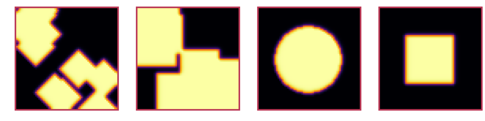
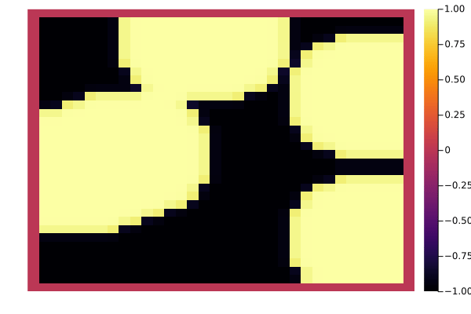
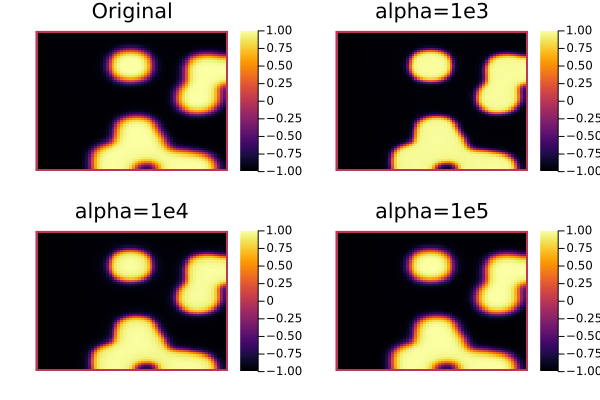

Bachelor Thesis
Table of Contents
This thesis follows reproducible research philosophy, in that we provide all relevant code in the same file as the writing itself. We then use this file to generate exports to html and PDF, as well as extract the code to be used independently. Further details on execution and reading of the original source provided in org-mode format is provided in 6
1. The Cahn-Hilliard equation
The Cahn-Hilliard(CH) equation is a partial differential equation (PDE) solving the state of a two-phase fluid(Wu 2022). The form of the CH equation used in this thesis is
\begin{equation} \label{orge55a5bc} \begin{aligned} \partial_{t}\phi(x,t) &= \nabla \cdot(M(\phi)\nabla\mu) \\ \mu &= - \varepsilon^2 \Delta\phi + W'(\phi) \end{aligned} \end{equation}where, \( \phi\) is a phase-field variable representing the different states of the fluids through an interval \(I=[-1,1] \)
\begin{align*} \phi &= \begin{cases} 1 &\,, \phi = \text{phase 1} \\ -1 &\,, \phi =\text{ phase 2} \end{cases} \end{align*}\(\varepsilon\) is a positive constant correlated with boundary thickness and \(\mu\) is the chemical potential(Wu 2022).
In this thesis we assume \(M(\phi) \equiv 1 \), simplifying the CH equation used in (Wu 2022) (Shin, Jeong, and Kim 2011).
The advantages of the CH approach, as compared to traditional boundary coupling, are for example: “explicit tracking of the interface” (Wu 2022), as well as “evolution of complex geometries and topological changes […] in a natural way” (Wu 2022). In practice it enables linear interpolation between different formulas on different phases.
1.1. Derivation from paper
1.1.1. The free energy
The authors in (Wu 2022) define the CH equation using the Ginzburg-Landau free energy equation:
\begin{align*} \label{orgb6ae8a3} E^{\text{bulk}} = \int_{\Omega} \frac{\varepsilon^2}{2} |\nabla \phi |^2 + W(\phi) \, dx \end{align*}where \(W(\phi) \) denotes the Helmholtz free energy density of mixing (Wu 2022) that we approximate it in further calculations with \(W(\phi) = \frac{(1-\phi ^2)^2}{4}\) as in (Shin, Jeong, and Kim 2011). Additionally \( \nabla\phi \) represents the change in phase-field.
The chemical potential, \( \mu \), then follows as the variational derivation of the free energy \eqref{orgb6ae8a3}.
\begin{align*} \mu &= \frac{\delta E_{bulk}(\phi)}{\delta \phi} = -\varepsilon^2 \Delta \phi + W'(\phi) \end{align*}1.1.2. Derivation of the CH equation from mass balance
The paper (Wu 2022) motivates us to derive the CH equation as follows:
\begin{equation} \label{org9756b9f} \partial_t \phi + \nabla \cdot J = 0 \end{equation}where \( J \) is mass flux. The equation \eqref{org9756b9f} then ensures continuity of mass Using the no-flux boundary conditions:
\begin{align} J \cdot n &= 0 & \partial\Omega &\times (0,T)\\ \partial_n\phi &= 0 & \partial\Omega &\times (0,T) \end{align}conservation of mass follows see(Wu 2022).
\begin{equation} \label{org89d2130} \begin{aligned} \frac{d}{dt}\int_{\Omega}\phi&=\int_{\Omega}\frac{\partial \phi}{\partial t} dV \\ &= - \int_{\Omega} \nabla \cdot J \ dV\\ &= \int_{\partial\Omega} J \cdot n \ dA \\ &= 0 \end{aligned} \end{equation}Therefore mass is conserved over time, as shown in \eqref{org89d2130}. We define the mass flux, \( J \), as the gradient in chemical potential as follows
\begin{align} J &= - \nabla \mu \end{align}This results in the CH equation as stated in \eqref{orge55a5bc}.
\begin{equation} \label{orge88f4a8} \begin{aligned} - \nabla \mu &= 0 \\ \partial_n \phi &= 0 \end{aligned} \end{equation}i.e. no flow leaves and potential on the border doesn’t change. In order to show the CH equation’s consistency with thermodynamics we take the time derivation of the free energy \eqref{orgb6ae8a3} and we show that it decreases in time.
\begin{align*} \frac{d}{dt}E^{bulk}(\phi(t)) &= \int_{\Omega} ( \varepsilon^2 \nabla \phi \cdot \nabla \partial_t \phi + W'(\phi) \partial_t \phi) \ d x \\ &=\int_{\Omega} (\varepsilon^2\nabla\phi + W'(\phi))\partial_t\phi \ dx\\ &=\int_{\Omega} \mu \partial_t \phi \ dx\\ &= \int_{\Omega} \mu \cdot \Delta\mu \ dx \\ &= -\int_{\Omega} \nabla\mu \cdot \nabla\mu \ dx + \int_{\partial\Omega} \mu \nabla\phi_t \cdot n \ dS \\ &\stackrel{\partial_n\phi = 0}{=} - \int_{ \Omega } |\nabla \mu|^2 \ d x, & \forall t \in [0,T) \end{align*}2. Baseline multi-grid solver
As baseline for numerical experiments we use a two-grid method based on the finite difference method defined in (Shin, Jeong, and Kim 2011).
2.1. The discretization of the CH equation:
It discretizes the phase-field ,\( \phi \), and chemical potential ,\( \mu \), into grid-wise functions \(\phi_{ij}, \mu_{ij} \) and defines the partial derivatives \( D_xf_{ij}, \ D_yf_{ij} \) using the differential quotients:
\begin{align} D_xf_{i+\frac{1}{2} j} &= \frac{f_{i+1j} - f_{ij}}{h} & D_yf_{ij+\frac{1}{2}} &= \frac{f_{ij+1} - f_{ij}}{h} \end{align}For \( \nabla f, \nabla \cdot \nabla f \) then follows:
\begin{align*} \label{orge50a092} \nabla_d f_{ij} &= (D_x f_{i+1j} , \ D_y f_{ij+1}) \\ \Delta_d f_{ij} &= \frac{D_x f_{i+\frac{1}{2}j} - D_x f_{i-\frac{1}{2}j} + D_y f_{ij+\frac{1}{2}} - D_y f_{ij-\frac{1}{2}}}{h} = \nabla_d \cdot \nabla_d f_{ij} \end{align*}The authors in (Shin, Jeong, and Kim 2011) further adapt the discretized phase-field by the characteristic function of the domain \( \Omega\) in order to satisfy the boundary conditions:
\begin{align*} G(x,y) &= \begin{cases} 1, & (x,y) \in \Omega \\ 0, & (x,y) \not\in \Omega \end{cases} \end{align*}To simplify the notation for discretized derivatives we use the following abbreviations:
| Math | Code |
| \( \Sigma_G f_{ij} = G_{i+\frac{1}{2}j} f^{n + \frac{1}{2},m}_{i+1j} + G_{i-\frac{1}{2}j} f^{n + \frac{1}{2},m}_{i-1j} + G_{ij+\frac{1}{2}} f^{n + \frac{1}{2},m}_{ij+1} + G_{ij-\frac{1}{2}} f^{n + \frac{1}{2},m}_{ij-1} \) | discrete_weigted_neigbour_sum(i,j,...) |
| \( \Sigma_G = G_{i+\frac{1}{2}j} + G_{i-\frac{1}{2}j} + G_{ij+\frac{1}{2}} + G_{ij-\frac{1}{2}} \) | neighbours_in_domain(i,j,G) |
function neighbours_in_domain(i, j, G, len, width) ( G(i + 0.5, j, len, width) + G(i - 0.5, j, len, width) + G(i, j + 0.5, len, width) + G(i, j - 0.5, len, width) ) end function discrete_G_weigted_neigbour_sum(i, j, arr, G, len, width) ( G(i + 0.5, j, len, width) * arr[i+1, j] + G(i - 0.5, j, len, width) * arr[i-1, j] + G(i, j + 0.5, len, width) * arr[i, j+1] + G(i, j - 0.5, len, width) * arr[i, j-1] ) end
We can then write the modified Laplacian \( \nabla_d (G \nabla_df_{ij}) \) as:
\begin{align*} \nabla_{d} \cdot(G \nabla_df_{ij}) &= \frac{\Sigma_Gf_{ij} - \Sigma_G\cdot f_{ij}}{h^2} \end{align*}We use this modified Laplacian to deal with boundary conditions. Our abbreviations simplify separating implicit and explicit terms in the discretization. The authors in (Shin, Jeong, and Kim 2011) then define the discrete CH equation adapted for the domain as:
\begin{equation} \label{orgc37370d} \begin{aligned} \frac{\phi_{ij}^{n+1} - \phi_{ij}^n}{\Delta t} &= \nabla _d \cdot (G_{ij} \nabla_d \mu_{ij}^{n+\frac{1}{2}} ) \\ \mu_{ij}^{n+\frac{1}{2}} &= 2\phi_{ij}^{n+1} - \varepsilon^2 \nabla_d \cdot (G_{ij} \nabla _d \phi_{ij}^{n+1} ) + W'(\phi_{ij}^n) - 2\phi _{ij}^n \end{aligned} \end{equation}and derive a numerical scheme from this implicit equation.
2.2. Simplifications
The authors in (Shin, Jeong, and Kim 2011) modelled the phase-field problem for complex shaped domains. Even tough this work uses rectangular domains, we simplify the adaptation of the algorithm by the domain indicator function, as well as 0 padding, in order to correctly include the boundary conditions of the CH equation. Therefore, the internal representation of the adapted algorithm considers phase-field ,\( \phi \), and chemical potential field ,\( \mu \), as two-dimensional arrays with the shape \( (N_x + 2 , N_y + 2) \) in order to accommodate padding. Where Nx and Ny are the number of steps in x-/y-direction, respectively. Hence, we implement the discrete domain function as:
\begin{align*} G_{ij} &= \begin{cases} 1, & (i,j) \in [2,N_x+1] \times [2,N_y+1] \\ 0, & \text{else} \end{cases} \end{align*}function G(i, j, len, width) if 2 <= i <= len + 1 && 2 <= j <= width + 1 return 1.0 else return 0.0 end end
We derive the iteration operator \( L(\phi^{n+1} , \mu^{n+\frac{1}{2}}) = (\zeta^n ,\psi^n) \)as in (Shin, Jeong, and Kim 2011).
\begin{align*} L \begin{pmatrix} \phi^{n+1}_{ij} \\ \mu^{n+\frac{1}{2}}_{ij} \end{pmatrix} &= \begin{pmatrix} \frac{\phi^{n+1}_{ij}}{\Delta t} - \nabla _d \cdot ( G_{ij} \nabla _d \mu^{n+\frac{1}{2}}_{ij} ) \\ \varepsilon^2 \nabla _d \cdot (G \nabla_d \phi_{ij}^{n+1}) - 2\phi_{ij}^{n+1} + \mu_{ij}^{n+\frac{1}{2}} \end{pmatrix} \end{align*}function L(solver::multi_solver,i,j , phi , mu) xi = solver.phase[i, j] / solver.dt - (discrete_G_weigted_neigbour_sum(i, j, solver.potential, G, solver.len, solver.width) - neighbours_in_domain(i, j, G, solver.len, solver.width) * mu )/solver.h^2 psi = solver.epsilon^2/solver.h^2 * (discrete_G_weigted_neigbour_sum(i, j, solver.phase, G, solver.len, solver.width) - neighbours_in_domain(i, j, G, solver.len, solver.width) * phi) - 2 * phi + mu return [xi, psi] end
This operator follows from \eqref{orgc37370d} by separating implicit and explicit terms \( L \) and \( (\zeta^n_{ij} , \psi^n_{ij})^T \), respectively.
\begin{align*} \begin{pmatrix} \zeta^n \\ \psi^n \end{pmatrix} &= \begin{pmatrix} \frac{\phi_{ij}^{n}}{\Delta t}\\ W'(\phi_{ij}^n) - 2\phi_{ij}^n \end{pmatrix} \end{align*}Due to being explicit, we know everything needed to calculate \( (\zeta^n_{ij} , \psi^n_{ij})^T \) at the beginning of each time step. We compute those values once and store them in the solver.
function set_xi_and_psi!(solver::T) where T <: Union{multi_solver , relaxed_multi_solver} xi_init(x) = x / solver.dt psi_init(x) = solver.W_prime(x) - 2 * x solver.xi[2:end-1, 2:end-1] = xi_init.(solver.phase[2:end-1,2:end-1]) solver.psi[2:end-1, 2:end-1] = psi_init.(solver.phase[2:end-1,2:end-1]) return nothing end
Furthermore, as it enables a Newton iteration, we derive its Jacobian with respect to the current grid point \( (\phi^{n+1}_{ij} , \mu^{n+\frac{1}{2}}_{ij})^{T} \):
\begin{align*} DL\begin{pmatrix} \phi \\ \mu \end{pmatrix} &= \begin{pmatrix} \frac{1}{\Delta t} & \frac{1}{h^2}\Sigma_{G} \\ -\frac{\varepsilon^2}{h^2}\Sigma_{G} - 2 & 1 \end{pmatrix} \end{align*}function dL(solver::multi_solver , i , j) return [ (1/solver.dt) (1/solver.h^2*neighbours_in_domain(i,j,G,solver.len , solver.width)); (-1*solver.epsilon^2/solver.h^2 * neighbours_in_domain(i,j,G,solver.len , solver.width) - 2) 1] end
2.3. V-cycle approach
The numerical method proposed in (Shin, Jeong, and Kim 2011) consists of a V-cycle multi-grid method derived from previously stated operators. Specificly we use a two-grid implementation consisting of
- a Gauß-Seidel relaxation for smoothing.
- restriction and prolongation methods between grids \( h \leftrightarrow H \).
- a Newton iteration to solve \( L(x,y)_H = L(\bar{x} , \bar{y}) + (d_h , r_h) \).
The V-cycle of a two-grid method using pre and post smoothing is then stated by:
function v_cycle!(grid::Array{T}, level) where T <: solver solver = grid[level] #pre SMOOTHing: SMOOTH!(solver, 40, true) d = zeros(size(solver.phase)) r = zeros(size(solver.phase)) # calculate error between L and expected values for I in CartesianIndices(solver.phase)[2:end-1, 2:end-1] d[I], r[I] = [solver.xi[I], solver.psi[I]] .- L(solver, I.I..., solver.phase[I], solver.potential[I]) end restrict_solver!(grid[level], grid[level+1]) solver = grid[level+1] solution = deepcopy(solver) d_large = restrict(d, G) r_large = restrict(r, G) u_large = zeros(size(d_large)) v_large = zeros(size(d_large)) #Newton Iteration for solving smallgrid for i = 1:300 for I in CartesianIndices(solver.phase)[2:end-1, 2:end-1] diffrence = L(solution, I.I..., solution.phase[I], solution.potential[I]) .- [d_large[I], r_large[I]] .- L(solver, I.I..., solver.phase[I], solver.potential[I]) #diffrence = collect(L(solution, I.I...)) .- collect(L(solver, I.I...)) #diffrence = [d_large[I] , r_large[I]] local ret = dL(solution, I.I...) \ diffrence u_large[I] = ret[1] v_large[I] = ret[2] end solution.phase .-= u_large solution.potential .-= v_large end u_large = solver.phase .- solution.phase v_large = solver.potential .- solution.potential solver = grid[level] solver.phase .+= prolong(u_large , G) solver.potential .+= prolong(v_large, G) SMOOTH!(solver, 80, true) end
So let’s take a closer look at the internals, namely the phase field after pre-SMOOTHing \( \bar{\phi} \), the phase residuals of \( \left[ L(\bar{\phi_{ij}}, \bar{\mu_{ij}}) - (\zeta_{ij} , \psi_{ij}) \right]_{ij \in \Omega} \) and the result of the Newton iteration on coarsest level.

After a few iterations, V-cycle exhibits the following behavior:
<<setup-grid>> set_xi_and_psi!(solver) pbar = ProgressBar(total = 1000) anim = @animate for i in 1:100 for j in 1:10 v_cycle!(testgrd, 1) update(pbar) end set_xi_and_psi!(testgrd[1]) heatmap(testgrd[1].phase , clim =(-1,1) , framestyle=:none ) end gif(anim , "images/iteration.gif" , fps = 10)

2.4. SMOOTH operator
The authors (Shin, Jeong, and Kim 2011)derived Gauss-Seidel Smoothing from:
\begin{align*} L \begin{pmatrix} \phi^{n+1}_{ij} \\ \mu^{n+\frac{1}{2}}_{ij} \end{pmatrix} &= \begin{pmatrix} \zeta^n_{ij} \\ \psi^n_{ij} \end{pmatrix} \end{align*}solved for \( \phi , \mu \). SMOOTH consists of point-wise Gauß-Seidel relaxation, by solving L for \( \overline{\phi} ,\overline{\mu} \) with the initial guess for \( \zeta^n , \psi^n \).
\begin{align} SMOOTH( \phi^{n+1,m}_{ij}, \mu^{n + \frac{1}{2},m}_{ji}, L_h , \zeta^n , \psi^n ) \end{align}and we implement it as
function SMOOTH!( solver::T, iterations, adaptive ) where T <: Union{multi_solver, adapted_multi_solver , gradient_boundary_solver} for k = 1:iterations old_phase = copy(solver.phase) for I in CartesianIndices(solver.phase)[2:end-1, 2:end-1] i, j = I.I bordernumber = neighbours_in_domain(i, j, G, solver.len, solver.width) coefmatrix = dL(solver, i,j ) b = [ ( solver.xi[i, j] + discrete_G_weigted_neigbour_sum( i, j, solver.potential, G, solver.len, solver.width ) / solver.h^2 ), ( solver.psi[i, j] - (solver.epsilon^2 / solver.h^2) * discrete_G_weigted_neigbour_sum( i, j, solver.phase, G, solver.len, solver.width ) ) ] res = coefmatrix \ b solver.phase[i, j] = res[1] solver.potential[i, j] = res[2] end #if adaptive && LinearAlgebra.norm(old_phase - solver.phase) < 1e-8 # #println("SMOOTH terminated at $(k) succesfully") # break #end end end

2.5. Test data:
For testing and later training we use a multitude of different phase-fields, notably an assortment of randomly placed circles, squares, and arbitrary generated values.
| Size | blobs | blobsize | norm |
|---|---|---|---|
| 64 | 10 | 10 | 2 |
| 64 | 10 | 10 | 100 |
| 512 | 20 | 50 | 2 |
using Random function testdata(gridsize , blobs , radius ,norm;rng=MersenneTwister(42)) rngpoints = rand(rng,1:gridsize, 2, blobs) M = zeros(gridsize,gridsize) .- 1 for p in axes(rngpoints , 2) point = rngpoints[:, p] for I in CartesianIndices(M) if (LinearAlgebra.norm(point .- I.I , norm) < radius) M[I] = 1 end end end M end

Figure 1: Examples of different phase-fields used as the initial condition in this work.
2.6. explicit alternative
3. Numerical evaluation
The analytical CH equation conserves mass \eqref{org9756b9f} and the free energy ,\( E_{bulk} \), \eqref{orgb6ae8a3} decreases in time, i.e. consistence with the second law of thermodynamics. Therefore, we use discrete variants of those concepts as necessary conditions for a “good” solution. Furthermore, since \( E_{bulk} \) is closely correlated with chemical potential, \( \mu \), we evaluate this difference as quality of convergence.
3.1. Tests
Executing... 3e230bc1
<<setup-grid>> original_grid = testgrd n = 100 pbar = ProgressBar(total = 10 * n) energy = zeros(0) massbalance = zeros(0) anim = @animate for i in 1:100 set_xi_and_psi!(original_grid[1]) for j in 1:10 v_cycle!(original_grid, 1) update(pbar) end push!(energy , bulk_energy(testgrd[1])) push!(massbalance , sum(testgrd[1].phase)) p0 = heatmap(original_grid[1].phase , clim =(-1,1) , framestyle=:none , legend=true, lims=(1,size(testgrd[1].phase)[1]), aspect_ratio=:equal, title = "phasefield" ) p1 = heatmap(original_grid[1].potential , framestyle=:none , legend=true, lims=(1,size(testgrd[1].phase)[1]), aspect_ratio=:equal, title = "potential" ) p2 = plot(1:i , energy, xlim=(1,n), title = "Bulk energy") plot(p0,p1) p3 = plot(1:i , massbalance .-massbalance[1] , xlim=(1,n), title = "Mass change") plot(p0,p1,p2,p3) end gif(anim , "images/behaviour.gif" , fps = 10)

3.2. Energy evaluations
As discrete energy measure we use:
\begin{align*} E^{\text{bulk}} &= \sum_{i,j \in \Omega} \frac{\varepsilon^2}{2} |G\nabla \phi_{ij} |^2 + W\left(\phi_{ij}\right) \, dx \\ &= \sum_{i,j \in \Omega} \frac{\varepsilon^2}{2} G_{i+\frac{1}{2}j}(D_x\phi_{i+\frac{1}{2}j}) ^2 + G_{ij+\frac{1}{2}}(D_y\phi_{ij+\frac{1}{2}})^2 + W\left(\phi_{ij}\right) \, dx \\ \end{align*}function bulk_energy(solver::T) where T <: Union{multi_solver , relaxed_multi_solver} energy = 0 dx = CartesianIndex(1,0) dy = CartesianIndex(0,1) W(x) = 1/4 * (1-x^2)^2 for I in CartesianIndices(solver.phase)[2:end-1,2:end-1] i,j = I.I energy += solver.epsilon^2 / 2 * G(i+ 0.5,j ,solver.len, solver.width) * (solver.phase[I+dx] - solver.phase[I])^2 + G(i,j+0.5,solver.len ,solver.width) * (solver.phase[I+dy] - solver.phase[I])^2 + W(solver.phase[I]) end return energy end

3.3. Mass balance
Instead of a physical mass we use the average of \(\phi\) over the domain \(\Omega\) written as:
\begin{equation} \begin{aligned} \frac{1}{|\Omega|}\int_{\Omega}\phi \ dx \end{aligned} \end{equation}We calculate this balance as:
\begin{align*} b &= \frac{\sum_{i,j \in \Omega} \phi_{ij}}{|\{(i,j) \in \Omega\}|} \end{align*}such that \( b = 1 \) means there is only phase 1, \( \phi \equiv 1 \), and \( b = -1 \) means there is only phase 2, \( \phi \equiv -1 \).
function massbal(arr) num_cells= *((size(arr).-2)...) return sum(arr[2:end-1, 2:end-1])/num_cells end
3.4. rate of convergence
3.4.1. convergence of a sub iteration v-cycle
in order to evaluate convergence we observe the change in phase
\begin{equation} \| \phi^n - \phi^{n+1,m} \|_{Fr} \end{equation}where \( \|\cdot\|_{Fr} \) represents a Frobenious norm over the tensors representing \( \phi.^n,\phi^{n+1,m} \). In addition we track the change of bulk energy \begin{equation} \frac{d}{dt} Ebulk = - ∫Ω |∇μ|2 \ dx \end{equation}. discetized as follows: \begin{equation} Δ Ebulk = - ∑ij ∈ Ω |∇dμ|2 \end{equation}.
function bulk_energy_potential(solver::T) where T <: solver energy = 0 dx = CartesianIndex(1,0) dy = CartesianIndex(0,1) W(x) = 1/4 * (1-x^2)^2 for I in CartesianIndices(solver.phase)[2:end-1,2:end-1] i,j = I.I energy += G(i+ 0.5,j ,solver.len, solver.width) * (solver.potential[I+dx] - solver.potential[I])^2 + G(i,j+0.5,solver.len ,solver.width) * (solver.potential[I+dy] - solver.potential[I])^2 end return energy end

3.4.2. convergence unter refinment in time
we test the bahaviour unter refinement in time by succesivly subdeviding the original time interval \( [0,T] \) in finer parts

Figure 2: behavior of the baseline solver while solving the time interval \( T = \left[ 0 , 10^{-2} \right] \) with increasing number of timesteps
3.4.3. convergence under refinement in space
we test convergence in space by succesivly subdividing our grid into finer meshes
Executing... da6e958f
4. Relaxed problem
In effort to decrease the order of complexity, from fourth order derivative to second order, we propose an elliptical relaxation approach, where the relaxation variable \( c \) is the solution of the following elliptical PDE:
\begin{align*} \label{orgc0e52a6} - \Delta c^\alpha + \alpha c^a &= \alpha \phi ^\alpha, \end{align*}where \( \alpha \) is a relaxation parameter. We expect to approach the original solution of the CH equation \eqref{orge55a5bc} as \( \alpha \to \infty \). This results in the following relaxation for the classical CH equation \eqref{orge55a5bc}:
\begin{equation} \label{org3106dc2} \begin{aligned} \partial_t \phi^\alpha &= \Delta \mu \\ \mu &= \varepsilon ^2 \alpha(c^\alpha - \phi^\alpha) + W'(\phi) \end{aligned} \end{equation}It requires solving the elliptical PDE each time-step to calculate \(c\).
We obtain a simpler approach in the numerical solver, with the drawback of having more variables. However those are independent.
As ansatz for the numerical solver we propose:
\begin{equation} \label{org99da369} \begin{aligned} \frac{\phi_{ij}^{n+1,\alpha} - \phi_{ij}^{n,\alpha}}{\Delta t} &= \nabla _d \cdot (G_{ij} \nabla_d \mu_{ij}^{n+\frac{1}{2},\alpha} ) \\ \mu_{ij}^{n+\frac{1}{2},\alpha} &= 2\phi_{ij}^{n+1,\alpha} - \varepsilon^2 a(c_{ij}^{n+1,\alpha} - \phi_{ij}^{n+1,\alpha}) + W'(\phi_{ij}^{n,\alpha}) - 2\phi _{ij}^{n,\alpha} \end{aligned} \end{equation}This approach is inspired by \eqref{orgc37370d} adapted to the relaxed CH equation \eqref{org99da369}. We then adapt the multi-grid solver proposed in 2 to the relaxed problem by replacing the differential operators by their discrete counterparts as defined in \eqref{orge50a092}, and expand them .
4.1. Elliptical PDE:
In order to solve the relaxed CH equation we solve the following PDE in each time step:
\begin{align*} - \nabla \cdot (G \nabla c^\alpha) + \alpha c^\alpha = \alpha \phi ^\alpha \end{align*}Similarly to the first solver we solve this PDE with a finite difference scheme using the same discretization as before.
4.1.1. Discretization
The discretization of the PDE expands the differential operators in the same way and proposes an equivalent scheme for solving the elliptical equation \eqref{orgc0e52a6}.
\begin{align*} - \nabla_d \cdot (G_{ij} \nabla_d c_{ij}^\alpha) + \alpha c_{ij}^\alpha &= \alpha \phi_{ij}^\alpha \end{align*}\( \implies \)
\begin{align*} - (\frac{1}{h}(G_{i+\frac{1}{2}j} \nabla c^\alpha_{i+\frac{1}{2}j} + G_{ij+\frac{1}{2}} \nabla c^\alpha_{ij+\frac{1}{2}}) & \\ - (G_{i-\frac{1}{2}j} \nabla c^\alpha_{i-\frac{1}{2}j} + G_{ij-\frac{1}{2}} \nabla c^\alpha_{ij-\frac{1}{2}})) + \alpha c_{ij}^\alpha &= \alpha \phi_{ij}^\alpha \end{align*}\( \implies \)
\begin{align*} - \frac{1}{h^2} ( G_{i+\frac{1}{2}j}(c_{i+1j}^\alpha - c_{ij}^\alpha) & \\ +G_{ij+\frac{1}{2}}(c_{ij+1}^\alpha - c_{ij}^\alpha) & \\ +G_{i-\frac{1}{2}j}(c_{i-1j}^\alpha - c_{ij}^\alpha)& \\ +G_{ij-\frac{1}{2}}(c_{ij-1}^\alpha - c_{ij}^\alpha)) + \alpha c_{ij}^\alpha &=\alpha \phi_{ij}^\alpha \end{align*}As before we abbreviate \( \Sigma_G c^\alpha_{ij} = G_{i+\frac{1}{2}j} c^\alpha_{i+1j} + G_{i-\frac{1}{2}j} c^\alpha_{i-1j} + G_{ij+\frac{1}{2}} c^\alpha_{ij+1} + G_{ij-\frac{1}{2}} c^\alpha_{ij-1} \) and \( \Sigma_G = G_{i+\frac{1}{2}j} + G_{i-\frac{1}{2}j} + G_{ij+\frac{1}{2}} + G_{ij-\frac{1}{2}} \). Then the discrete elliptical PDE can be stated as:
\begin{align} \label{orgbffdab1} -\frac{ \Sigma_G c^\alpha_{ij}}{h^2} + \frac{\Sigma_G}{h^2} c^\alpha_{ij} + \alpha c^\alpha_{ij} &= \alpha\phi^\alpha_{ij} \end{align}- DONE Proposal1 Newton Solver
And then we propose a simple newton Iteration to solve \eqref{orgbffdab1} for \( x = c^\alpha_{ij} \): Let \( F, dF \) be:
\begin{align*} F(x) &= - \frac{\Sigma_Gc^\alpha_{ij}}{h^2} + \frac{\Sigma_G}{h^2} x + \alpha x - \alpha \phi_{ij}^\alpha \end{align*}and \( dF(x) \)
\begin{align*} dF(x) &= - \frac{\Sigma_G}{h^2} + \alpha \end{align*}the implementation then is the following:
as input, we use :
- Proposal2 solver
solving \eqref{orgbffdab1} for \(c_{ij}^\alpha \) then results in.
\begin{align*} \left( \frac{\Sigma_{G}}{h^2} + \alpha \right)c_{ij}^{\alpha} = \alpha\phi^{\alpha}_{ij} + \frac{\Sigma_G c_{ij}^{\alpha}}{h^2} \end{align*}and can be translated to code as follows
function elyps_solver!(solver::T, n) where T <: Union{relaxed_multi_solver , adapted_relaxed_multi_solver} for k in 1:n for i = 2:(solver.len+1) for j = 2:(solver.width+1) bordernumber = neighbours_in_domain(i, j,G, solver.len, solver.width) solver.c[i, j] = ( solver.alpha * solver.phase[i, j] + discrete_G_weigted_neigbour_sum(i, j, solver.c, G, solver.len, solver.width) / solver.h^2 ) / (bordernumber / solver.h^2 + solver.alpha) end end end end
4.2. Relaxed PDE as operator L
We reformulate the discretization \eqref{org99da369} in terms of the relaxed operator \(L\) as follows:
\begin{align*} L \begin{pmatrix} \phi ^{n+1,\alpha} \\ \mu^{n+\frac{1}{2},\alpha} \end{pmatrix} &= \begin{pmatrix} \frac{\phi^{n+1,m,\alpha}_{ij}}{\Delta t} - \nabla _d \cdot (G_{ji} \nabla _d \mu^{n + \frac{1}{2},m,\alpha}_{ji}) \\ \varepsilon ^2 \alpha (c^\alpha - \phi^{n+1,m,\alpha}_{ij}) - 2\phi ^{n+1,m,\alpha}_{ij} -\mu^{n + \frac{1}{2},m,\alpha}_{ji} \end{pmatrix} \end{align*}function L(solver::relaxed_multi_solver,i,j , phi , mu) xi = solver.phase[i, j] / solver.dt - (discrete_G_weigted_neigbour_sum(i, j, solver.potential, G, solver.len, solver.width) - neighbours_in_domain(i, j, G, solver.len, solver.width) * mu )/solver.h^2 psi = solver.epsilon^2 * solver.alpha*(solver.c[i,j] - phi) - 2 * solver.phase[i,j] - solver.potential[i,j] return [xi, psi] end
and its Jacobian:
\begin{align*} DL\begin{pmatrix} \phi \\ \mu \end{pmatrix} &= \begin{pmatrix} \frac{1}{\Delta t} & \frac{1}{h^2}\Sigma_{G} \\ - \varepsilon^2 \alpha - 2 & 1 \end{pmatrix} \end{align*}function dL(solver::relaxed_multi_solver , i , j) return [ (1/solver.dt) (1/solver.h^2*neighbours_in_domain(i,j,G,solver.len , solver.width)); (-1*solver.epsilon^2 * solver.alpha - 2) 1] end
4.3. SMOOTH operator
Correspondingly the SMOOTH operation expands to:
\begin{align*} SMOOTH( \phi^{n+1,m,\alpha}_{ij}, \mu^{n + \frac{1}{2},m,\alpha}_{ji}, L_h , \zeta^{n,\alpha} , \psi^{n,\alpha} ) \end{align*} \begin{equation} \label{org0bba7df} \begin{aligned} -\frac{\Sigma_G}{h^2}\overline{\mu^{n + \frac{1}{2},m,\alpha}_{ji}} &= \frac{\phi ^{n+1,m,\alpha}_{ij}}{\Delta t} - \zeta^{n,\alpha}_{ij} - \frac{\Sigma_G\mu_{ij}}{h^2} \\ \varepsilon ^2 \alpha \overline{\phi ^{n+1,m,\alpha}_{ij}} + 2 \phi ^{n+1,m,\alpha}_{ij} &= \varepsilon ^2 \alpha c^{n,\alpha}_{ij} -\overline{\mu^{n + \frac{1}{2},m,\alpha}_{ji}} - \psi_{ij}^{n,\alpha} \end{aligned} \end{equation}We then solve directly for the smoothed variables, \( \overline{\mu_{ij}^{n+1,m,\alpha}} \) and \( \overline{\phi_{ij}^{n+1,m,\alpha}} \). This was not done in the original paper (Shin, Jeong, and Kim 2011) because the required system of linear equations in the paper (Shin, Jeong, and Kim 2011) was solved numerically. We simplify the relaxed system in one-dimension, and solve explicitly:
\begin{align*} \varepsilon^2 \alpha(\phi^\alpha) + 2\phi^\alpha &= \varepsilon^2 \alpha c^\alpha - \frac{h^2}{\Sigma_G} (\frac{\phi^\alpha}{\Delta t} - \zeta^n_{ij} - \frac{1}{h^2} \Sigma_G \mu_{ij}) - \psi_{ij} \end{align*}\( \implies \)
\begin{align*} \varepsilon^2\alpha (\phi^\alpha) + 2\phi^\alpha + \frac{h^2}{\Sigma_G}\frac{\phi^\alpha}{\Delta t} &= \varepsilon^2 \alpha c^\alpha - \frac{h^2}{\Sigma_G} (- \zeta^n_{ij} - \frac{1}{h^2} \Sigma_G \mu_{ij}) - \psi_{ij} \end{align*}\( \implies \)
\begin{align*} (\varepsilon^2 \alpha + 2 + \frac{h^2}{\Sigma_G \Delta t}) \phi^\alpha &= \varepsilon^2 \alpha c^\alpha - \frac{h^2}{\Sigma_G}(- \zeta^n_{ij} - \frac{\Sigma_G \mu_{ij}}{h^2} ) -\psi_{ij} \end{align*}\( \implies \)
\begin{align*} \phi^\alpha &= \left(\varepsilon^2 \alpha c^\alpha - \frac{h^2}{\Sigma_G}(- \zeta^n_{ij} - \frac{\Sigma_G \mu_{ij}}{h^2} ) -\psi_{ij}\right)\left(\varepsilon^2 \alpha + 2 + \frac{h^2}{\Sigma_G \Delta t}\right)^{-1} \end{align*}function SMOOTH!( solver::T, iterations, adaptive ) where T <: Union{relaxed_multi_solver , adapted_relaxed_multi_solver} for k = 1:iterations old_phase = copy(solver.phase) for I in CartesianIndices(solver.phase)[2:end-1, 2:end-1] i, j = I.I bordernumber = neighbours_in_domain(i, j, G, solver.len, solver.width) solver.phase[I] = (solver.epsilon^2 * solver.alpha * solver.c[I] - solver.h^2 / bordernumber * ( -solver.xi[I] - discrete_G_weigted_neigbour_sum(i,j,solver.potential , G , solver.len , solver.width) / solver.h^2 ) - solver.psi[I]) / (solver.epsilon^2 * solver.alpha + 2 + solver.h^2 / (bordernumber*solver.dt)) #since the solver still needs the potetential we calculate it as well solver.potential[I] = (solver.phase[I]/solver.dt - solver.xi[I] - discrete_G_weigted_neigbour_sum(i,j, solver.potential , G , solver.len , solver.width)/solver.h^2) * (-solver.h^2/bordernumber) end if adaptive && LinearAlgebra.norm(old_phase - solver.phase) < 1e-10 #println("SMOOTH terminated at $(k) succesfully") break end end end

#TODO plot for different alpha
4.4. The relaxed V-cycle approach
As the difference between both methods is abstracted away in the operators, the relaxed V-cycle is identical to the original counterpart. Therefore we reuse the original V-cycle in the 2.3. The only additional step is solving the elliptical equation as following:
<<setup-relaxed-grid>> pbar = ProgressBar(total = 1000) anim = @animate for t in 1:100 set_xi_and_psi!(testgrd[1]) elyps_solver!(solver , 1000) for j in 1:10 v_cycle!(testgrd, 1) update(pbar) end heatmap(testgrd[1].phase , clim =(-1,1) , framestyle=:none ) end gif(anim , "images/iteration_relaxed2.gif" , fps = 10)

4.5. Test
Executing... c398ad79
4.6. Comparison
<<setup-comparison>> n = 100 m = 100 pbar = ProgressBar(total = n*m) anim = @animate for i in 1:n set_xi_and_psi!(original_grid[1]) set_xi_and_psi!(relaxed_grid1[1]) set_xi_and_psi!(relaxed_grid2[1]) set_xi_and_psi!(relaxed_grid3[1]) elyps_solver!(relaxed_grid1[1] , 1000) elyps_solver!(relaxed_grid2[1] , 1000) elyps_solver!(relaxed_grid3[1] , 1000) for j in 1:m v_cycle!(original_grid, 1) v_cycle!(relaxed_grid1, 1) v_cycle!(relaxed_grid2, 1) v_cycle!(relaxed_grid3, 1) update(pbar) end p0 = heatmap(original_grid[1].phase , clim =(-1,1) , framestyle=:none , title="Original") p1 = heatmap(relaxed_grid1[1].phase , clim =(-1,1) , framestyle=:none, title="alpha=1e3" ) p2 = heatmap(relaxed_grid2[1].phase , clim =(-1,1) , framestyle=:none, title="alpha=1e4" ) p3 = heatmap(relaxed_grid3[1].phase , clim =(-1,1) , framestyle=:none, title="alpha=1e5" ) plot(p0,p1,p2,p3) end gif(anim , "images/comparison.gif" , fps = 10)

In practice we observe the following behaviour:
include(pwd() * "/src/solvers.jl") include(pwd() * "/src/adapted_solvers.jl") include(pwd() * "/src/utils.jl") include(pwd() * "/src/multisolver.jl") include(pwd() * "/src/multi_relaxed.jl") include(pwd() * "/src/elypssolver.jl") include(pwd() * "/src/testgrids.jl") using Plots using LinearAlgebra using ProgressBars using JLD2 using Distributed JULIA_NUM_THREADS = 24 M = jldopen("data/test-phasefield.jld2")["M"] original_grid = testgrid(multi_solver, M, 2) alphas = 0:1e3:2e5 function alpha_error(α::Number , solution::Array ) test_solver = testgrid(relaxed_multi_solver, M, 2, alpha=α) set_xi_and_psi!(test_solver[1]) elyps_solver!(test_solver[1], 1000) for j in 1:100 v_cycle!(test_solver , 1) end return norm(test_solver[1].phase - solution) end set_xi_and_psi!(original_grid[1]) for j in 1:100 v_cycle!(original_grid, 1) end print("finished original v_cycle") tasks = [] for α in alphas t = Threads.@spawn alpha_error(α , original_grid[1].phase) push!(tasks , (α=α , task = t)) end results = @show [(alpha=t.α, error=fetch(t.task)) for t in tasks] p=plot(results) savefig(p, "images/alpha-error.svg")

5. AI
We propose a data motivated alternative to the elliptical PDE in the relaxed CH equation \eqref{org99da369}. We propose there to be a better solution then the discrete result of \eqref{orgc0e52a6}. We define “better” as minimizing:
\begin{equation} \label{org683a7f9} ||\phi^{n+1} + \frac{1}{\alpha}\nabla\cdot(G\nabla\phi^{n+1}) - c ||_{Fr} \end{equation}in the Frobenious norm \(||\cdot||_{Fr}\) and implement our loss function accordingly
lossfn(y_hat::AbstractArray , y::AbstractArray) = norm(y .- y_hat)
We calculate the expected value \( \phi^{n+1} + \frac{1}{\alpha} \nabla \cdot (G\nabla\phi^{n+1}) \) before training and use it as \( \hat{y} \)
function ggrad(x::AbstractArray, solver::T) where T <: solver Indices = CartesianIndices(x) Ifirst , Ilast = first(Indices) , last(Indices) padding = oneunit(Ifirst) res = zeros(size(x)) for I in (Ifirst + padding):(Ilast - padding) i,j = I.I res[I] = x[i] + (discrete_weigted_G_sum(i,j,x,G,solver.len,solver.width) - neighbours_in_domain(i,j,G, solver.len , solver.width) * x[I])/ solver.h^2 end return res end
Executing... 5575f052
5.1. proposal CNN
using Flux model = Chain( Conv((5,5) , 1=>5; stride=1), Conv((5,5) , 5=>1; stride=1), )
6. Technical details
We are writing this thesis in org-mode file format.
7. References
O